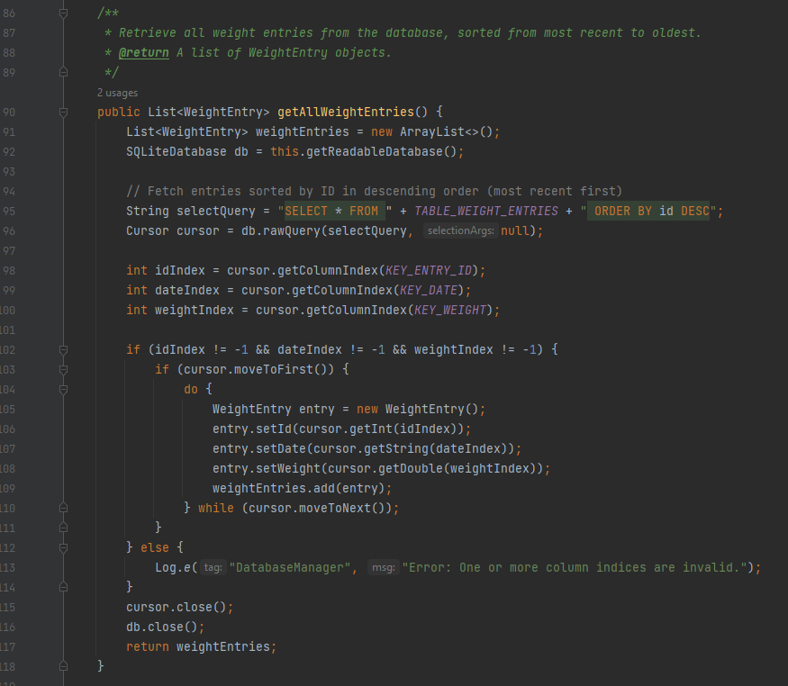
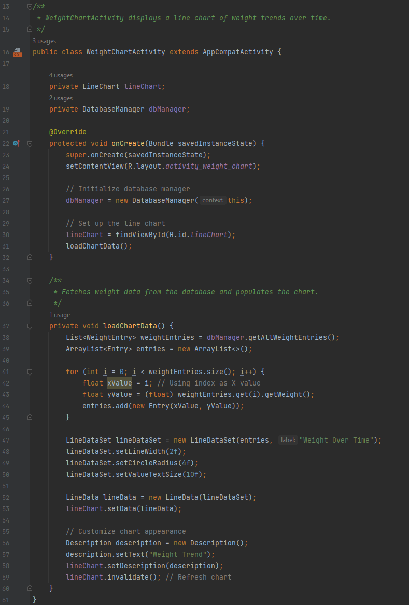
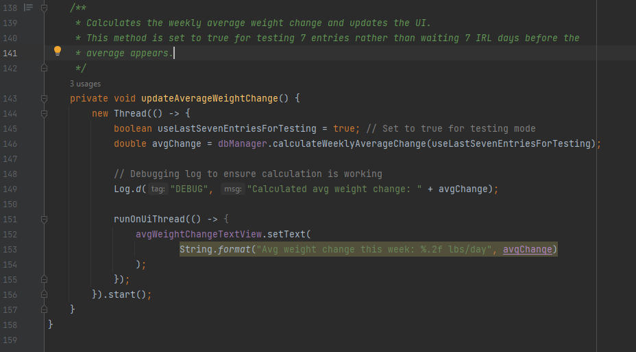
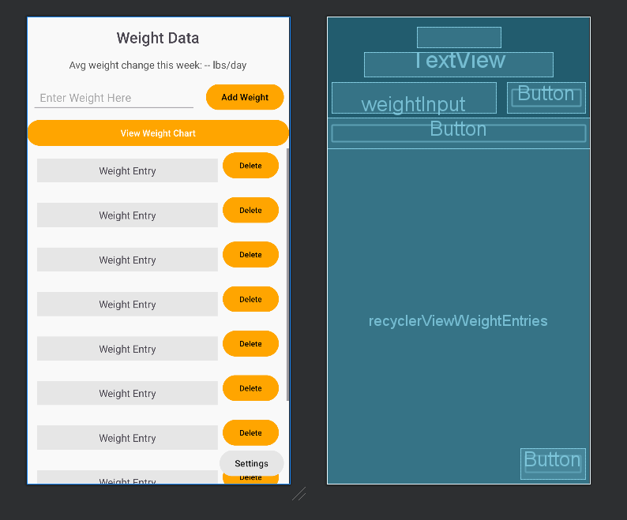
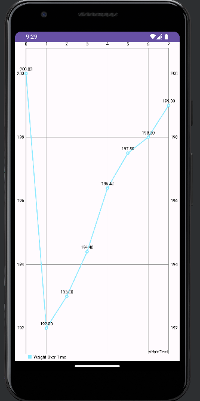
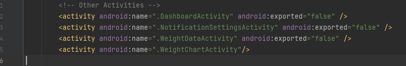

This enhancement focused on integrating a database-backed charting system into the GravityGauge project. The new implementation retrieves stored weight data from an SQLite database and visualizes weight trends over time using MPAndroidChart.
The following function retrieves all weight entries from the database, sorting them by most recent first.

public List getAllWeightEntries() {
List weightEntries = new ArrayList<>();
SQLiteDatabase db = this.getReadableDatabase();
String selectQuery = "SELECT * FROM " + TABLE_WEIGHT_ENTRIES + " ORDER BY id DESC";
Cursor cursor = db.rawQuery(selectQuery, null);
int idIndex = cursor.getColumnIndex(KEY_ENTRY_ID);
int dateIndex = cursor.getColumnIndex(KEY_DATE);
int weightIndex = cursor.getColumnIndex(KEY_WEIGHT);
if (idIndex != -1 && dateIndex != -1 && weightIndex != -1) {
if (cursor.moveToFirst()) {
do {
WeightEntry entry = new WeightEntry();
entry.setId(cursor.getInt(idIndex));
entry.setDate(cursor.getString(dateIndex));
entry.setWeight(cursor.getDouble(weightIndex));
weightEntries.add(entry);
} while (cursor.moveToNext());
}
} else {
Log.e("DatabaseManager", "Error: Column indices are invalid.");
}
cursor.close();
db.close();
return weightEntries;
}
Once the weight data is retrieved, it is passed to MPAndroidChart for visualization.

private void loadChartData() {
List weightEntries = dbManager.getAllWeightEntries();
ArrayList entries = new ArrayList<>();
for (int i = 0; i < weightEntries.size(); i++) {
float xValue = i;
float yValue = (float) weightEntries.get(i).getWeight();
entries.add(new Entry(xValue, yValue));
}
LineDataSet lineDataSet = new LineDataSet(entries, "Weight Over Time");
lineDataSet.setLineWidth(2f);
lineDataSet.setCircleRadius(4f);
lineDataSet.setValueTextSize(10f);
LineData lineData = new LineData(lineDataSet);
lineChart.setData(lineData);
Description description = new Description();
description.setText("Weight Trend");
lineChart.setDescription(description);
lineChart.invalidate();
}
To improve trend analysis, a moving average algorithm was implemented. This function calculates the weekly weight trend, allowing users to track gradual changes.
A new "View Weight Chart" button was added to activity_weight_data.xml to allow users to navigate to the weight chart screen.

viewChartButton.setOnClickListener(v -> {
Intent intent = new Intent(WeightDataActivity.this, WeightChartActivity.class);
startActivity(intent);
});
Below is the final implementation of the weight trend chart.
During testing, the app crashed when trying to open the weight chart screen. The issue was traced to a missing activity declaration in AndroidManifest.xml.

These improvements resulted in:
By integrating database-driven charting functionality, improving navigation, and adding trend analysis, the GravityGauge app now provides a more comprehensive and visually intuitive way to track weight changes over time.